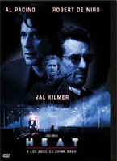

|
Heat/A-,B+ |
|
Warner/1995/124m/ANA
2.35 |
Michael Mann infuses Heat
with smoldering intensity in Warner's dynamic anamorphic DVD.
Mann writes and directs Heat as if he were
distilling all the work he's done for the screen before. Like
some great painters of yore, Mann takes successful elements from
other complete works, marries them to some new ideas and makes
an exciting and new whole that takes on qualities of past
creative successes. Heat stands on its own as a
passionate and precise work of art. Although not perfect, it is
so genre ambitious that its scope alone is an awesome
achievement.
Heat's about a
professional heist team taking down one successful score after
another. Their work flows with precise planning and split
second execution. The team is run by Neil McCauley, a bright
ex-con determined never to spend time behind bars again.
It is Neil's passion for perfection which drives team to
success. Each detail must be faithfully attended, every t
crossed. Enter Vincent Hanna, a policeman dedicated to work
before everything else. Now Hanna's team has found the link
to McCauley's team and is all over them like glue. Can the
heisters take down one last great score?
Alongside the great action
segments, Heat attempts to get inside its characters to
see what makes them tick without compromising the dramatic flow
of this essentially action thriller. Mann gives us time to know
McCauley as he plans and executes jobs and the rest of his life.
Hanna's failed home life is laid bare and it's clear that all
that is left for this man is the chase, his work and nothing
else. We are given more than just cursory glimpses into the life
of gang member Chris Shiherlis and his wife Charlene. Mann milks
more understanding from gang member Michael Cheritto with
a small knowing smile when he agrees to join the last heist.
Details of character expand our interest beyond being jaw
dropped witnesses to pyrotechnic cinema displays. Mann weaves an
intricate movie tapestry covered by peripheral details that
bring everything to life.
Robert De Niro has never been better than as Neil McCauley.
Every look, every breath, every movement of body defines
McCauley. There's a moment in the car when the expression on De
Niro's face changes slowly and he whirls the car to another
direction. The actor communicates a delicate range of
emotions with his eyes and lips. We understand what makes him do
what comes after this scene. Ironically, this is the same moment
for me when Heat makes its only false turn. Had the film
had the temerity to end in the car, maybe with a crane shot or
another encompassing device, Heat would have been nothing
short of magnificent. Still, Heat's great and it's Mann's
work, not mine.
Playing McCauley's detective counterpart Vincent Hanna, Al
Pacino is less controlled, more given to overflowing dramatics.
It's a good Pacino performance but it pales in the shadow of De
Niro's awesome work. The supporting cast is terrific. Val Kilmer
brings a cowboy flair to Chris Shiherlis. He gives himself
totally to the character. Ashley Judd is fabulous as Charlene.
Watch her performance as she wrestles with the realities of her
situation and the love for her man. Tom Sizemore disappears into
the part of Michael Cheritto. Though Sizemore has had more
substantial parts, Heat's his best screen time. Jon
Voight is a slyly perfect choice for the role of Nate,
McCauley's confidant and the gang's coordinator. Diane Venora
does interesting work as Justine Hanna and Amy Brenneman is an
appealing lure to Neil McCauley as Eady.
Michael Mann may never make
a film that comes so close to perfection as Heat. Like
the heists in the film, each element is brilliantly planned and
executed. And Mann has assembled a splendid team of pros to
bring off the job. Dante Spinotti moves his camera magnificently
during the crescendo of the film, the bank heist. The director
of photography delivers various lighting, natural or foreboding
with unobtrusive ease. Mann chose Elliott Gouldenthal to compose
Heat's score and it's terrific. Pounding behind the
action, complimenting the landscape, driving Heat to it's
conclusion, the music marries perfectly with the image and
story. The image and sound editing are sterling examples of
perfection at the editing bay. No false steps here. This film is
a thoroughly successful heist.
Heat is a good looking DVD. Perhaps a bit of excess grain
sneaks into a couple of scenes, but the feeling Mann is looking
for is achieved. Night scenes are glossy black, shadow detail is
outstanding, and overall sharpness can only be niggled at
critically. The slightly blue color palette is pure Mann. It's
accurately represented on the DVD. The Dolby Digital
5:1 sound is dynamic, extraordinarily directional, and
brilliantly edited. During each of the heists and the one
burglary, powerful or detailed sound enhances the
sequence. The major set piece is a symphony of pump gun blasts,
shattered glass, and screeching tires which fills the home
theater with an assault of the senses. Heat's a
great film done proudly by a great medium.
|
The Feature
Archive has articles ranging from John
Ford to Blonde
Bimbos, Akira
Kurosawa and Frank
Darabont.

Click on the image above to access The
Heistmasters, a view of the best directors of the
heist.
Check out the Movie
Poster Archive for short bios and images of
Susan Hayward, Kirk Douglas, Katharine Hepburn and many more.
This month's featured star is Clark
Gable.
Imaging
Science Foundation
The Imaging Science Foundation promotes
proper standards in home theater viewing. ISF trained
technicians offer monitor calibration services to consumers. The
difference in a properly calibrated monitor can be
astounding. Click on the image to find an ISF member near you.
HOT
LINKS
DVD
Verdict
They
may be judgmental, but that's the point, isn't it. Lots of DVD
reviews plus news and more
Home
Theater Reference Reviewing System

When you read a DVD review it's of utmost
importance to know what equipment is being used to evaluate
quality. Click on the projector to find out more.
The
Home Theater Forum
Looking for
lively and helpful exchanges on home theater, DVD, movies. Visit
this friendly site and get a hardy welcome. |